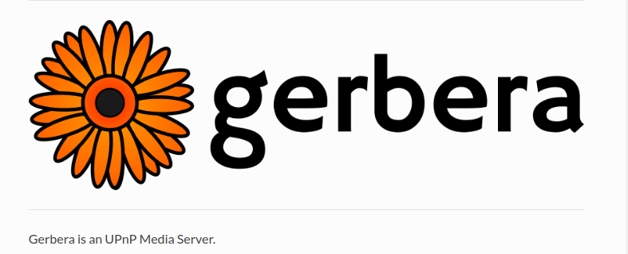
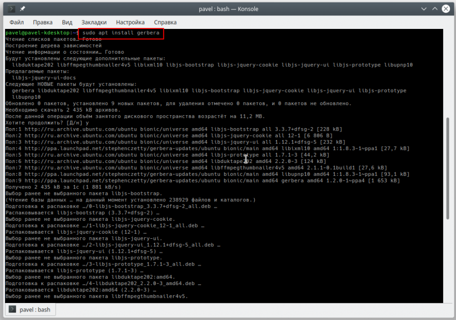
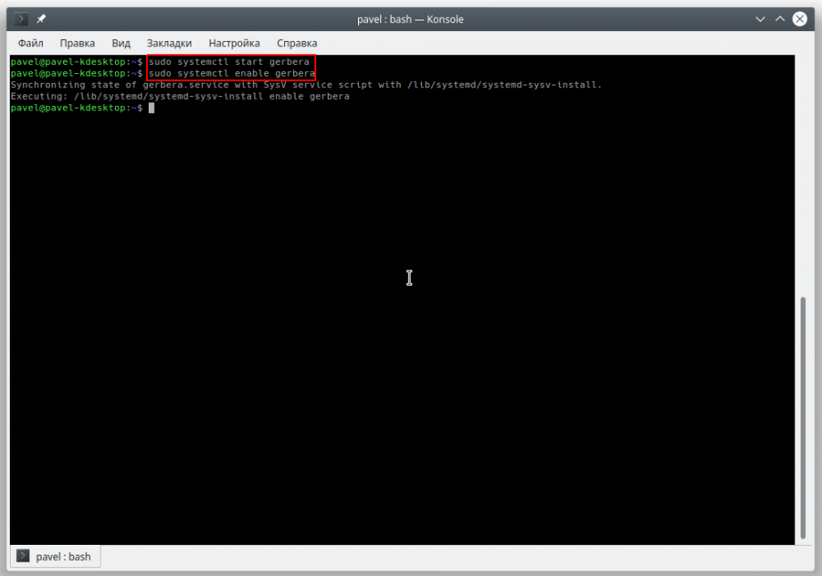
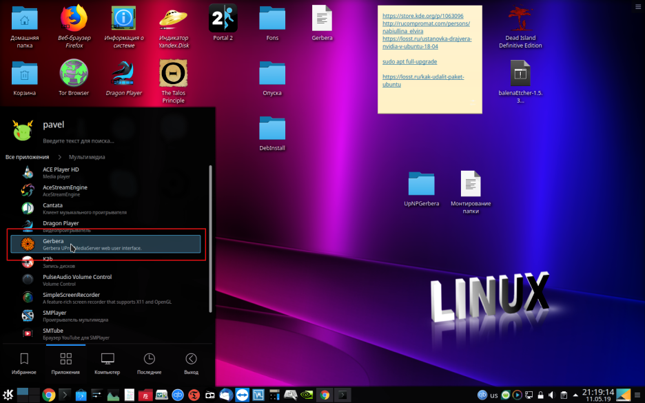
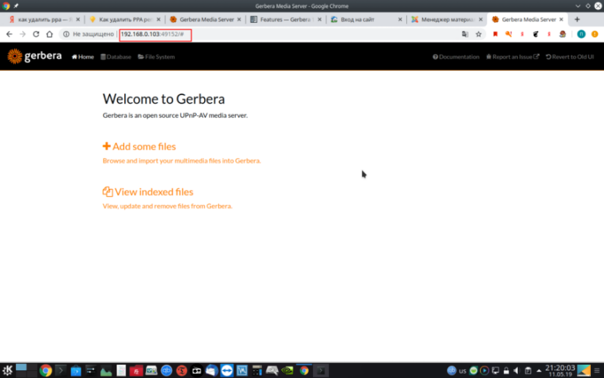
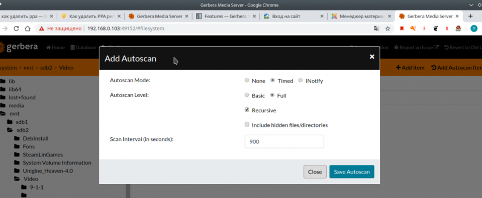
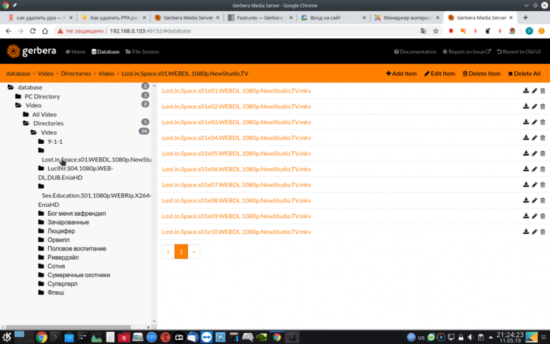
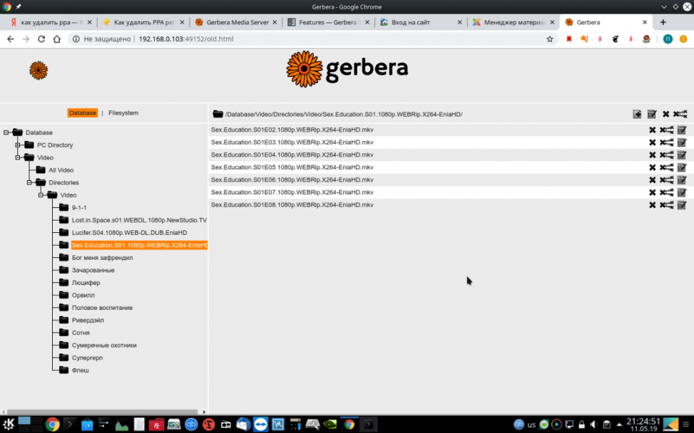
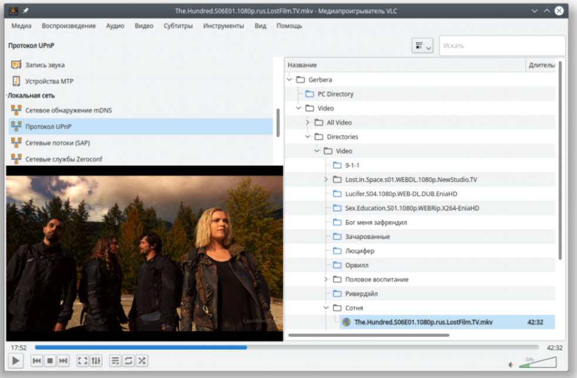
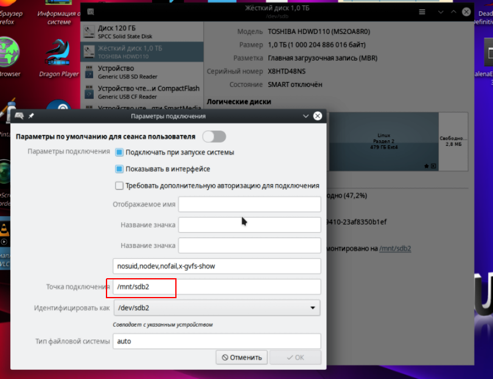

Настройка_DLNA
Шаг 3. Корректируем конфиг.
Шаг 4. Рестарт сервера.
Для того, чтобы сервер заработал (если все настроено правильно), его нужно перезапустить командой:
sudo service minidlna restart
К сожалению, мы имеем дело с Linux и мелкие проблемы иногда возникают. Здесь я опишу всего одну проблему, с которой мне пришлось столкнуться и решение которой я пока не нашел. Так получилось, что мой телевизор PHILIPS 43PUT6101/60 отказывается видеть сервер dlna, если был включен позже компьютера. Временное решение проблемы — перезапустить сервер командой из шага 4.
Еще об одной проблеме и ее решении можно почитать в конце статьи по этой ссылке.
========
Если что-то пойдёт не так то первым делом надо смотреть файл журнала "/var/log/minidlna.log". Статус сервера и список подключенных клиентов можно смотреть на веб-странице "http://<IP_вашего_сервера>:8200". Выглядит эта страница примерно так:
http://192.168.1.43:8200
1: lo: <LOOPBACK,UP,LOWER_UP> mtu 65536 qdisc noqueue state UNKNOWN mode DEFAULT group default qlen 1
link/loopback 00:00:00:00:00:00 brd 00:00:00:00:00:00
2: enp4s0: <BROADCAST,MULTICAST,UP,LOWER_UP> mtu 1500 qdisc pfifo_fast state UP mode DEFAULT group default qlen 1000
link/ether 00:16:e6:d8:97:f3 brd ff:ff:ff:ff:ff:ff
3: wlp6s0: <NO-CARRIER,BROADCAST,MULTICAST,UP> mtu 1500 qdisc mq state DOWN mode DORMANT group default qlen 1000
link/ether f8:1a:67:89:09:78 brd ff:ff:ff:ff:ff:ff
СЕТЬ1: lo: <LOOPBACK,UP,LOWER_UP> mtu 65536 qdisc noqueue state UNKNOWN mode DEFAULT group default qlen 1
link/loopback 00:00:00:00:00:00 brd 00:00:00:00:00:00
2: enp4s0: <BROADCAST,MULTICAST,UP,LOWER_UP> mtu 1500 qdisc pfifo_fast state UP mode DEFAULT group default qlen 1000
link/ether 00:16:e6:d8:97:f3 brd ff:ff:ff:ff:ff:ff
3: wlp6s0: <NO-CARRIER,BROADCAST,MULTICAST,UP> mtu 1500 qdisc mq state DOWN mode DORMANT group default qlen 1000
link/ether f8:1a:67:89:09:78 brd ff:ff:ff:ff:ff:ff
ip link set enp4s0 multicast on
ip link set enp4s0 broadcast 192.168.1.40
==========================================================================
Установка и настройка DLNA | UPnP медиасервера Gerbera (Mediatomb) в Ubuntu Linux 18.04 | Kubuntu Linux 18.04
UPnP (он же DLNA) - это сетевой протокол, предназначенный для простого подключения устройств и упрощения обмена цифровыми мультимедийными данными между вашими устройствами в локальной сети. Существует множество программ для Linux, которые могут помочь вам настроить сервер UPnP у вас дома.
Среди этих программ есть новая программа под названием Gerbera на GitHub. Если быть совсем честным, то Gerbera - это форк всем известного медиасервера под Linux с веб-интерфейсом, который всем был известен как Mediatomb.

Gerbera - это медиасервер UPnP, который позволяет организовать потоковую передачу цифрового мультимедиа через домашнюю сеть. В этой статье я расскажу вам, как можно установить и настроить его в Ubuntu 18.04 или же kubuntu 18.04 (в общем, настройка будет аналогична на любом дистрибутиве, основанном на Debian).
1. Установка DLNA | UPnP медиасервера Gerbera через Терминал
Установить Gerbera можно через ppa, поддерживаемый Стивеном Четти
Наберите в Терминале для установки следующие команды:
sudo add-apt-repository ppa:stephenczetty/gerbera-updates
sudo apt-get update
sudo apt install gerbera

2. Запуск DLNA | UPnP медиасервера Gerbera и настройка автостарта службы
Следующие две команды в Терминале запустят медиасервер и настроят его автозапуск
sudo systemctl start gerbera
sudo systemctl enable gerbera

3. Запуск веб-интерфейса DLNA | UPnP медиасервера Gerbera
Медиасервер Gerbera использует номер порта 49152, поэтому убедитесь, что порт не используется. Теперь вы можете запустить медиасервер Gerbera при помощи соответствующего значка в Меню запуска приложений. Правда, скорее всего при запуске веб-интерфейса вы получите сообщение о том, что GUI отключен. Необходимо его включить.

4. Включение GUI интерфейса в DLNA | UPnP медиасервере Gerbera
Для включения GUI нужно отредактировать файл конфигурации по адресу /etc/gerbera/config.xml, установив значение параметра ui enabled = "yes". Удобнее всего это сделать через Терминал при помощи команды:
sudo vim /etc/gerbera/config.xml
Если редактор Vim не установлен в Ubuntu, то предварительно установите его командой:
sudo apt install vim
Немного о редактировании файла в Vim:
Нажмите клавишу "i", чтобы перейти в режим редактирования. Теперь можно редактировать файл так же, как и в любом текстовом редакторе. После того как завершите редактирование, нажмите Esc, чтобы перейти в командный режим и наберите ":wq", то есть "Записать и выйти". Все, готово.
5. Перезапуск службы DLNA | UPnP медиасервера Gerbera
После редактирования файла конфигурации или в случае возникновения каких-либо проблем с сервером следует перезапустить службу медииасервера при помощи команды в Терминале
sudo systemctl restart gerbera
Далее нужно обязательно закрыть страницу веб-интерфейса и открыть заново, нажатие кнопки Обновить в браузере может не помочь.

6. Добавление медиаконтента в потоковую передачу DLNA | UPnP медиасервера Gerbera
Для добавления файла в потоковую передачу необходимо щелкнуть по ссылке File System, найти директорию с файлами музыки, видео или фото, а затем просто нажать ссылку Add Item для ручного добавления файла или Add Autoscan Item для добавления автосканирования каталога, содержащего мультемедийный контент.

7. Просмотр содержимого DLNA | UPnP медиасервера Gerbera
Для просмотра добавленного на сервер контента необходимо щелкнуть по ссылке Database. При щелчке по указанной ссылке вы увидите все медиафайлы, которые были добавлены вручную или автоматически.

8. Переключение в старый интерфейс DLNA | UPnP медиасервера Gerbera, доставшийся от Mediatomb
Если вы привыкли к тому старому интерфейсу, который был ранее в Mediatomb, то нужно кликнуть по ссылке Revert to old UI, что приведет к желанному результату.

9. Проверка работоспособности DLNA | UPnP медиасервера Gerbera
Для проверки работоспособности медиасервера Gerbera удобнее всего использовать плеер VCL. Для этого выбираем команду Вид -> Плейлист, переходим в раздел Протокол UPnP и, если все хорошо, то мы должны увидеть наш медиасервер.

10. Решение проблемы доступа к файловой системе для DLNA | UPnP медиасервера Gerbera
Для корректного доступа к файлам видео том с медиаданными должен быть смонтирован в каталог /mnt, а не /media, иначе Gerbera выдаст ошибку. Перенастроить точку монтирования можно при помощи утилиты Disks (дисковая утилита Gnome).
Для установки дисковой утилиты в Kubuntu используйте команду Терминала
sudo apt install gnome-disk-utility

11. Удаление DLNA | UPnP медиасервера Gerbera
Если вы вдруг решите удалить Gerbera, то просто наберите в Терминале команду
sudo apt purge gerbera
sudo add-apt-repository --remove ppa:stephenczetty/gerbera-updates
На этом, собственно, все. Надеюсь, теперь настройка медиасервера в Linux у вас не должна вызвать вопросов. Ну а если вопросы есть, то для этого есть комментарии.